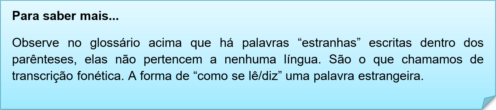
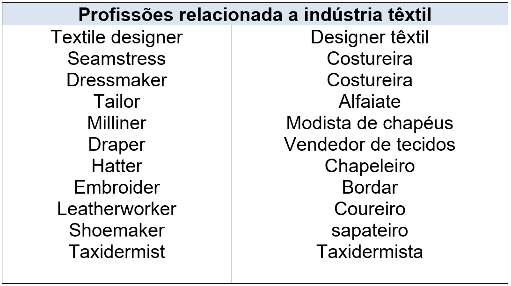
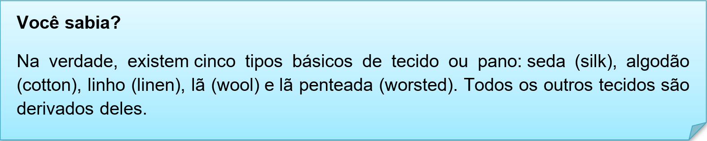
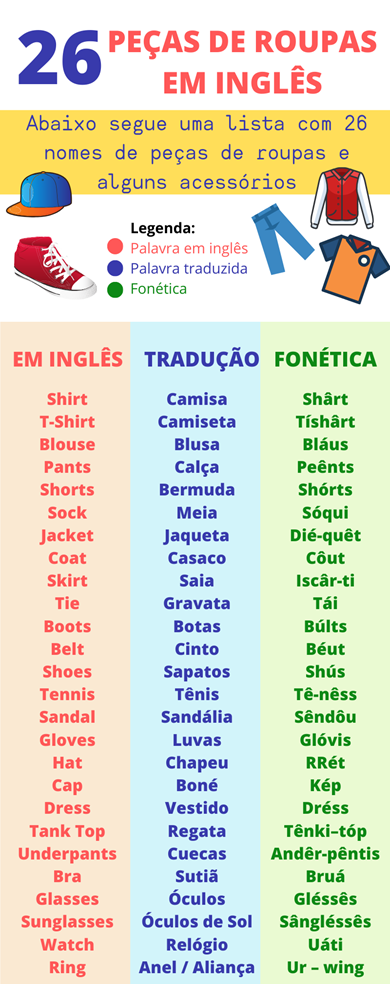

Capítulo 4: Textile and Clothing – Têxtil e Vestuário
Textile fibres
Textile fibres or textile fibers can be created from many natural sources (animal hair or fur, insect cocoons as with silk worm cocoons), as well as semisynthetic methods that use naturally occurring polymers, and synthetic methods that use polymer-based materials, and even minerals such as metals to make foils and wires. The textile industry requires that fibre content be provided on content labels. These labels are used to test textiles under different conditions to meet safety standards (for example, for flame-resistance), and to determine whether or not a textile is machine washable or must be dry-cleaned.
Nessa unidade vamos estudar sobre a indústria têxtil, vestuários e tipologias de tecidos. Vamos ver o que o texto sobre Fibras têxteis fala sobre esse setor que está sempre expansão.
As fibras têxteis ou têxteis podem ser criadas a partir de muitas fontes naturais (pêlos ou peles de animais, casulos de insetos como nos casulos de bicho da seda), bem como métodos semi-sintéticos que usam polímeros que ocorrem naturalmente e métodos sintéticos que usam polímeros. Materiais à base de água e até minerais como metais para fazer chapas e fios. A indústria têxtil exige que o conteúdo de fibra seja fornecido nos rótulos. Essas etiquetas são usadas para testar tecidos em diferentes condições para atender aos padrões de segurança (por exemplo, resistência à chama) e para determinar se um tecido é lavável na máquina ou deve ser lavado a seco.
Contextualizando – Glossário
Tipos de tecidos em inglês
Se você possui alguma familiaridade com os nomes de tecidos no seu idioma nativo, então, aprendê-los em inglês não será difícil, pois eles são frequentemente similares.
acrylic (akrílic) - acrílico
aluminium (alúminom) - alumínio
brass (bráss) - latão
bronze (bróns) - bronze
canvas (kánvas) - lona
cardboard (kárdbord) - cartão
cashmere (káshmiir) - caxemira
cement (semént) - cimento
clay (kléi) - argila
concrete (cónkrit) - concreto
copper (kóper) - cobre
corduroy (kórderoi) - veludo cotelê
cotton (kótn) - algodão
denim (dénim) - sarja de Nimes
feather (féder) - pluma
fiberglass (fáiberglas) - fibra de vidro
flannel (flánel) - franela
gauze (góos) - gaze
glass (glás) - vidro
gold (góuld) - ouro
iron (áiron) - ferro
lace (léis) - cordão
lead (led) - chumbo
leather (léder) - couro
linen (línen) - linho
marble (márbl) - mármore
nylon (náilon) - nylon
paper (péiper) - papel
plaster (pláster) - geso
plastic (plástik) - plástico
plywood (pláiwud) - madeira compensada
polyester (poliéster) - poliéster
porcelain (pórcelin) - porcelana
pottery (póteri) - cerâmica
rayon (réion) - 'rayon'
rubber (ráber) - borracha
silk (sílk) - seda
silver (sílver) - prata
steel (stíil) - aço
stone (stóun) - pedra
straw (stróo) - palha
suede (suéid) - camurça
tin (tin) - estanho
velvet (vélvet) - veludo
wax (wáx) - cera
wood (wúud) - madeira
wool (wúul) - lã

Observa a lista com as principais profissões (Jobs) ligadas a essa indústria

Para saber mais sobre vocabulário de peças de roupas, visite o link e assista ao vídeo, divirta-se e aumente seus conhecimentos

Aqui observamos as principais peças do vestuário em inglês. Contém os itens mais básicos de uso diário. E Assim como no vocabulário de tecidos temos a transcrição fonética das palavras para treinar a oralidade da língua inglesa
Curiosidades sobre as palavras T-shirt (camiseta) e SHIRT (camisa):
Nada de muito glamour, a origem da t-shirt está ligada diretamente à primeira guerra mundial, nas primeiras décadas de 1900. ... Ao ser trazida para o solo americano, o corte, que era feito em formato de T, ganhou o nome inglês de t-shirt
Reconstruindo conhecimentos – Adjetivos
adorável: adorable, lovely
alegre: joyful
amigável: friendly
alto: tall
baixo: short
bonito: handsome
bondoso: kind
bonita: beautiful, pretty
cansado: tired
carinhoso: caring
chato: boring
ciumento: jealous
decidido: determined
destemido: fearless
distraído: absent-minded
doente: sick
egoísta: selfish
engraçado: funny
esperto: smart, brainy
estudioso: studious
feliz: happy
feio: ugly
fiel: faithful
furioso: angry
generoso: generous
gordo: fat
gostoso: delicious (alimento)
grande: big
habilidoso: handy, skillful
honesto: honest
horrível: horrible
ingênuo: naive
inseguro: insecure
invejoso: envious
irritante: irritating
justo: fair
leal: loyal
liberal: open-minded
lindo: gorgeous
magro: thin
Ordem dos adjetivos em inglês
Como a sintaxe da língua portuguesa não é igual à da língua inglesa, é comum que haja dúvidas no que diz respeito à posição dos adjetivos em inglês.
Os adjetivos geralmente são posicionados antes dos substantivos. No entanto, quando uma frase possui mais de dois adjetivos, a seguinte ordem deve ser seguida:
Em Português: opinião > tamanho > idade > formato > cor > origem > religião > material > propósito > nome
Em inglês: opinion > size > age > shape > color > origen > religion > material > purpose > noun
Exemplos:
My neighbor is a lovely old man. (Meu vizinho é um idoso adorável.)
She lives in a fantastic big house. (Ela mora em uma casa fantástica e grande.)
He has a brand new red car. (Ele tem um carro vermelho novinho em folha.)
They prefer the old paper bag. (Eles preferem a antiga sacola de papel.)
Aplicando ao nosso conteúdo
• This dress is beautiful. > Este vestido é lindo.
• Look that big and pretty fabric! > Olha aquele tecido grande e lindo.
• This cotton is so soft. > Esse algodão é tão macio.
• The leather is heavy. > O couro é pesado.
O que aprendi
Nessa unidade aprendemos o vocabulário sobre o setor têxtil e vestuário;
• Aprendemos a usar as tabelas de transcrição fonética;
• Aprendemos a morfologia da palavra T-shirt;
• Observamos algumas curiosidades sobre esse setor;
• Aprendemos o uso dos adjetivos e suas posições dentro de uma frase;
Veja mais sobre ADJETIVOS E SUAS POSIÇÕES no vídeo
Praticando
Analise com atenção a imagem abaixo relacionada a indústria têxtil. Retire a ideia central do texto. Fique atento as palavras cognatas (semelhantes ao português ). Faça a leitura das imagens, isso ajuda a ler e interpretar diversos gêneros textuais.